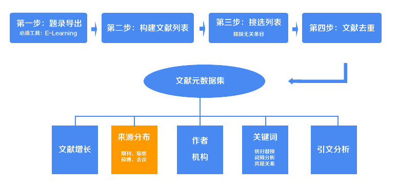
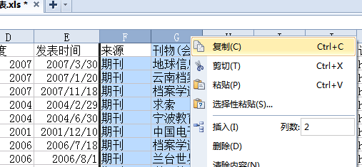
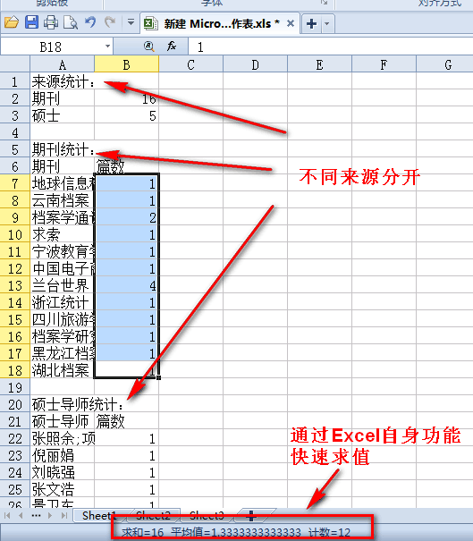

文献来源统计工具

在上一步中，你已经获得了Excel格式的文献元数据集，现在我们利用元数据集中的来源，对文献来源做统计，统计出文献来自哪些方面，并且每一个来源都有多少篇文章，并且利用Excel制作统计图。
打开上述的Excel文件，全选“来源”、“刊物(会议、导师)名称”那两列【注意是两列】，复制（如图）。

复制好了吗？把复制好的内容直接黏贴到下面的文本框中。
和之前你做的一样，你将得到一个经过统计好的txt文档（documents_meta_data_laiyuan.txt），直接复制txt文档中的内容到一个excel中，利用Excel来实现数据的图形化。
这里需要注意，因为把所有的来源都放在了一个Excel表格中，因此，你必须自己手动把这些来源拆分为不同的sheet，我已经把不同的来源分开了，应该很好判别。
